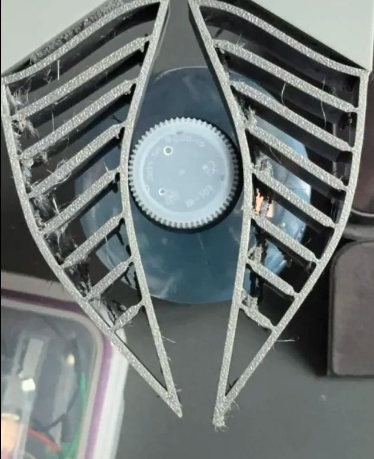
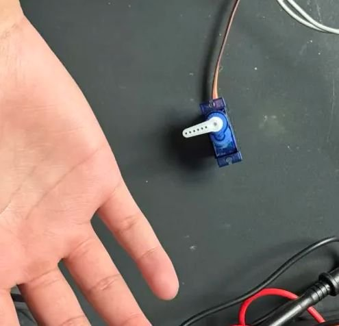
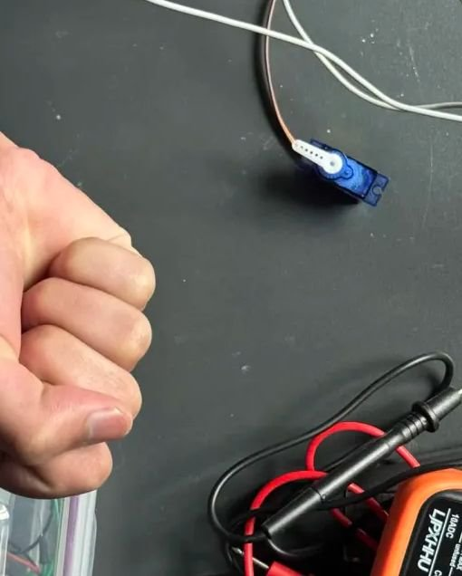

Project · Work in progress
EMG-Operated Claw
A claw that opens and closes as your hand does — driven by muscle signals, built as a step toward a cost-effective open-source prosthetic.



Goal
Familiarise myself with muscle activation signals and analog signal processing by building a claw that mirrors the user's hand opening and closing — and use those lessons toward a cost-effective, open-source prosthetic.
How it works
- A MyoWare EMG sensor captures muscle activation from the forearm.
- An ESP32 processes the analog signal and applies threshold-based logic in firmware.
- The firmware drives a servo that actuates a 3D-printed claw mechanism.
Current status
Testing different claw geometries in TPU (flexible filament turned out to be a rabbit hole of its own) and working on more reliable electrode placement for consistent signal output. Also exploring a port from the Arduino framework to the ESP8266 FreeRTOS SDK — overkill, but a deliberate learning exercise.